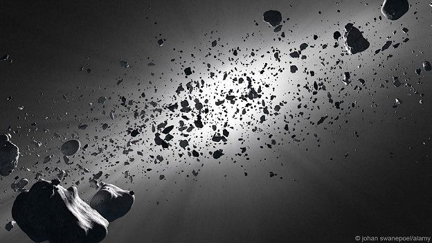
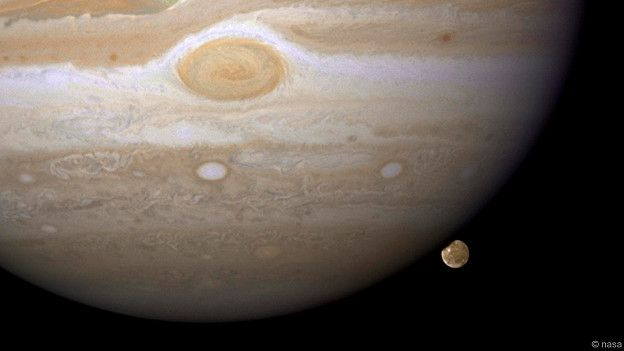
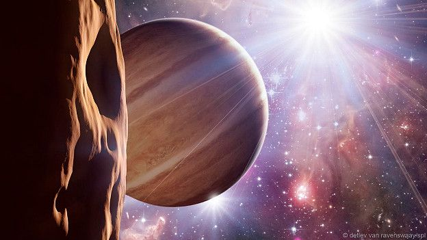
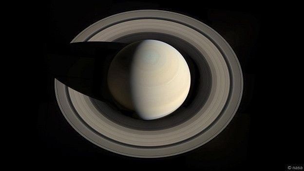
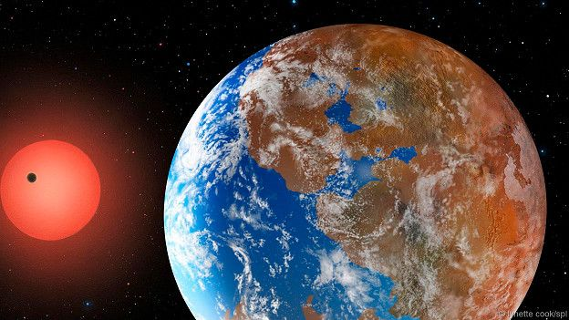
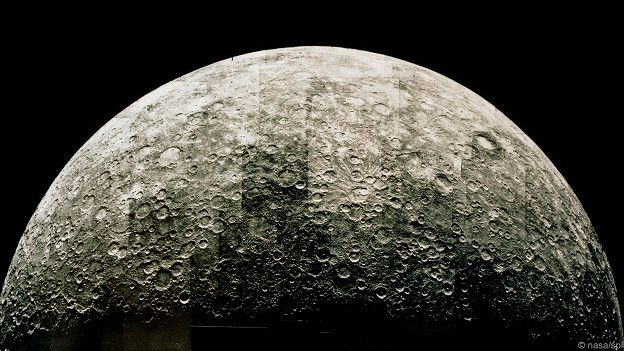
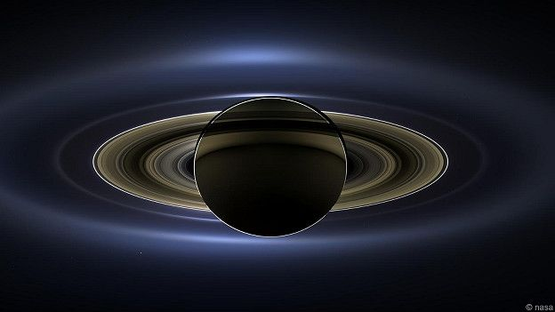
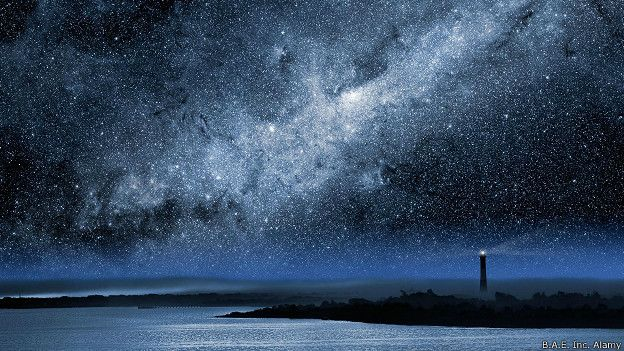
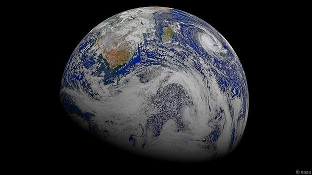

Планеты
Наша Солнечная система: неужели мы одни такие?
 Есть четыре внутренние планеты, расположенные ближе всего к Солнцу, они называются планетами земной группы (или твердотельными планетами). Твердая поверхность позволяет ходить по ним или осуществлять посадки космических аппаратов. Есть четыре внешние планеты (за исключением относительно небольшого, состоящего из скальных пород и льда Плутона, планетный статус которого относительно недавно был пересмотрен - теперь он считается карликовой планетой), они представляют собой гигантские газовые шары, окруженные кольцами. А между внутренними и внешними планетами расположен пояс астероидов.
Такая стройная конфигурация, правда? Собственно, около столетия у нас ничего и не было, кроме нее. Но в 1995 г. ситуация изменилась. 20 лет назад астрономы обнаружили первую экзопланету - планету, обращающуюся вокруг звезды, но не Солнца, вне Солнечной системы. Это был газовый гигант, похожий по массе на Юпитер, который назвали 51 Пегаса b.
В последующие два десятилетия удалось открыть тысячи других планет. По некоторым оценкам, в нашей Галактике их сотни миллиардов. Таким образом, Солнечная система не уникальна.
И все-таки, несмотря на такое большое количество планетных систем, астрономы считают, что в определенном смысле Солнечная система стоит особняком. Как так?
"Становится все более очевидно, что Солнечная система нетипична", - говорит Грегори Лафлин, планетолог из Калифорнийского университета в Санта-Крузе.
Пока еще не совсем понятно, насколько велика эта нетипичность (ведь одно дело - панк, забредший на вечер встречи ветеранов колхозного движения, совсем другое – лепрекон, скачущий по улице на единороге), но ученые уже пытаются объяснить причины особенностей Солнечной системы.
Если она окажется космологической аномалией, то, возможно, таковой является и Земля — а с нею и жизнь на нашей планете.
Иными словами, нельзя исключать нашу уникальность во Вселенной.
Есть четыре внутренние планеты, расположенные ближе всего к Солнцу, они называются планетами земной группы (или твердотельными планетами). Твердая поверхность позволяет ходить по ним или осуществлять посадки космических аппаратов. Есть четыре внешние планеты (за исключением относительно небольшого, состоящего из скальных пород и льда Плутона, планетный статус которого относительно недавно был пересмотрен - теперь он считается карликовой планетой), они представляют собой гигантские газовые шары, окруженные кольцами. А между внутренними и внешними планетами расположен пояс астероидов.
Такая стройная конфигурация, правда? Собственно, около столетия у нас ничего и не было, кроме нее. Но в 1995 г. ситуация изменилась. 20 лет назад астрономы обнаружили первую экзопланету - планету, обращающуюся вокруг звезды, но не Солнца, вне Солнечной системы. Это был газовый гигант, похожий по массе на Юпитер, который назвали 51 Пегаса b.
В последующие два десятилетия удалось открыть тысячи других планет. По некоторым оценкам, в нашей Галактике их сотни миллиардов. Таким образом, Солнечная система не уникальна.
И все-таки, несмотря на такое большое количество планетных систем, астрономы считают, что в определенном смысле Солнечная система стоит особняком. Как так?
"Становится все более очевидно, что Солнечная система нетипична", - говорит Грегори Лафлин, планетолог из Калифорнийского университета в Санта-Крузе.
Пока еще не совсем понятно, насколько велика эта нетипичность (ведь одно дело - панк, забредший на вечер встречи ветеранов колхозного движения, совсем другое – лепрекон, скачущий по улице на единороге), но ученые уже пытаются объяснить причины особенностей Солнечной системы.
Если она окажется космологической аномалией, то, возможно, таковой является и Земля — а с нею и жизнь на нашей планете.
Иными словами, нельзя исключать нашу уникальность во Вселенной.
Уникальная система?
Стоит только примириться с мыслью о том, что планеты в космосе встречаются не реже звезд, как перед нами возникает новое открытие - поразительное разнообразие их параметров. "Мы всегда питали надежду на то, что планет в космосе много, - говорит Лафлин. - И оказалось, что это действительно так. Но найденные нами экзопланеты разительно отличаются от планет Солнечной системы".

При помощи орбитальной обсерватории "Кеплер" астрономам удалось обнаружить тысячи экзопланет самых разнообразных составов и размеров. Оказывается, существуют совсем миниатюрные планетные системы, сравнимые по размерам с Юпитером и четырьмя из крупнейших его спутников. В других системах плоскость обращения планет находится под большим углом к плоскости вращения звезд. Некоторые планеты обращаются вокруг двух звезд сразу — наподобие планеты Татуин с двумя солнцами из фильма "Звездные войны".
В нашей Солнечной системе есть два типа планет - маленькие каменистые и крупные газообразные. Но астрономы пришли к выводу, что большинство экзопланет не вписывается ни в одну из этих категорий. По размерам они, чаще всего, представляют собой нечто среднее: меньше Нептуна, но крупнее Земли.
Самые маленькие из обнаруженных экзопланет могут быть каменистыми – их иногда называют сверхземлями (не совсем корректный термин, поскольку сверхземля вовсе необязательно схожа с Землей - это всего лишь планета чуть большего размера). Более крупные экзопланеты, известные как горячие нептуны, в основном состоят из газов.
Удивительно то, что многие из этих планет находятся на очень малом удалении от своих звезд - меньшем, чем расстояние между Меркурием и Солнцем. В 2009 г., когда астрономы впервые обнаружили такие близкие к звезде орбиты, большинство ученых были настроены скептически. "Это казалось совершенно невероятным, люди просто не могли поверить, что такое бывает", - говорит Лафлин. Однако впоследствии при помощи обсерватории "Кеплер", запущенной в том же году, удалось подтвердить, что такой феномен не просто существует, а и весьма распространен. По всей видимости, в нашей Галактике суперземли вращаются на близких к звездам орбитах чуть ли не половине случаев.

В этом, говорит Лафлин, заключается одно из самых важных отличий Солнечной системы: "Внутри орбиты Меркурия (между Меркурием и Солнцем – Ред.) нет вообще ничего. Даже астероидов".
Еще одна странность Солнечной системы — это Юпитер. Крупные экзопланеты встречаются не так часто, и по большей части они обращаются по орбитам, сравнимым с земной или венерианской. Только примерно у двух процентов изученных звезд есть планеты размером с Юпитер на орбитах, сравнимых с юпитерианской.
"Полное отсутствие каких-либо небесных тел внутри орбиты Меркурия и массивный Юпитер на значительном удалении от Солнца — вот те два фактора, которые отличают Солнечную систему", - отмечает Лафлин.
Никто точно не знает почему это так, но у Лафлина есть одна сложная теория — он считает, что Юпитер в свое время "блуждал" по Солнечной системе, уничтожая нарождающиеся планеты и, в конечном итоге, создав условия для формирования Земли.
Блуждающий Юпитер
Планеты рождаются вслед за своими звездами. Звезда возникает при схлопывании газового облака в плотный шар. Из остатков газа и пыли вокруг нее формируется диск, который затем и превращается в отдельные планеты.
Раньше астрономы полагали, что планеты Солнечной системы сформировались на своих нынешних орбитах. В непосредственной близости от горячей молодой звезды газ и лед находиться не могли - единственными возможными "строительными материалами" в этом регионе должны были быть силикаты и металлы, поэтому там и сформировались относительно небольшие твердые планеты. Вдали же от Солнца из газов и льдов возникли газовые гиганты, известные нам сегодня.

Однако в процессе поиска экзопланет астрономы обнаружили газовые гиганты, обращающиеся чрезвычайно близко к своим звездам – и это притом, что температуры на таких орбитах были бы слишком высокими для возникновения этих планет. Ученые пришли к выводу, что такие горячие юпитеры, вероятно, постепенно мигрировали ближе к своим звездам. Более того, планетарная миграция может быть весьма распространенным явлением - не исключено, что газовые гиганты Солнечной системы тоже в прошлом меняли свои орбиты.
"Раньше мы считали, что гигантские планеты находятся на своих нынешних орбитах с момента возникновения. Это был наш основополагающий постулат", - говорит Кевин Уолш, планетолог из Юго-западного научно-исследовательского института в Боулдере, штат Колорадо. Теперь же, по его словам, этого постулата больше не существует.
Уолш — сторонник гипотезы большого отклонения (Grand Tack hypothesis), названной так в честь зигзагообразного маневра в парусном спорте. Согласно ей, Юпитер начал менять орбиту в ранний период истории Солнечной системы, причем сначала планета приближалась к Солнцу, а затем начала удаляться от светила — подобно лавирующей яхте.
В соответствии с этой гипотезой, первоначальная орбита Юпитера была несколько уже нынешней - планета сформировалась на расстоянии примерно в три астрономические единицы от Солнца (одна астрономическая единица соответствует среднему расстоянию между Солнцем и Землей). В то время Солнечной системе было всего несколько миллионов лет — детский возраст в масштабах Вселенной, — и она все еще была наполнена газом.
По мере обращения Юпитера вокруг Солнца газ с внешней стороны орбиты поддталкивал планету ближе к светилу. Когда же за пределами юпитерианской орбиты сформировался Сатурн, это привело к возмущению газового поля, и центростремительное движение Юпитера прекратилось на расстоянии примерно в полторы астрономические единицы от Солнца.

После этого на Юпитер начали оказывать давление газы с внутренней стороны его орбиты, отталкивая планету во внешние регионы Солнечной системы. Поскольку с внешней стороны орбиты давить на Юпитер было уже нечему, он отдрейфовал на свою нынешнюю орбиту на расстоянии в 5,2 астрономической единицы от Солнца.
Предложенная гипотеза пришлась по душе планетологам, поскольку объясняла многие ранее непонятные феномены Солнечной системы. Благодаря "зигзагам" Юпитера регионы Солнечной системы, лежащие далее 1 астрономической единицы от Солнца, очистились от газа — по мнению астрономов, это являлось необходимым условием для формирования Марса. В рамках предыдущих моделей возникновения Солнечной системы выходило, что Марс должен быть крупнее, чем он есть на самом деле , но в гипотезу большого отклонения реальный диаметр планеты как раз вписывается.
Гипотеза также предполагает возникновение пояса астероидов, очень сходного с тем, что мы наблюдаем в Солнечной системе, - со сходными массами, орбитами и составом небесных тел. Хотя новая модель не раскрывает причины возникновения Юпитера (ответа на этот вопрос пока ни у кого нет), она объясняет, каким образом планета оказалась на своей нынешней относительно далекой от светила орбите.
Лафлин признает, что гипотеза большого отклонения представляется излишне заумной и даже несколько маловероятной. "Она вызывает определенный скептицизм; я сам поначалу относился к ней скептически, и в какой-то степени до сих пор в ней сомневаюсь", - говорит ученый. Но, учитывая успех, которым пользуется эта модель, Лафлин и его коллега-планетолог Константин Батыгин из Калифорнийского технологического института в Пасадене решили ее развить. "Давайте на время оставим наше недоверие, - говорит Лафлин. - Отнесемся к гипотезе серьезно и спросим себя, к каким последствиям могла привести миграция Юпитера".
Уничтоженные в зародыше
Оказывается, что последствия могли быть самыми серьезными. Согласно результатам компьютерных симуляций, Юпитер, добравшись до внутренних регионов Солнечной системы, начал крушить все на своем пути. Эти регионы были заполнены газом, пылью и наполовину сформировавшимися планетами - так называемыми планетезималями диаметром до 1000 км. По мере продвижения к Солнцу Юпитер пролагал дорогу сквозь весь этот материал, запуская цепочку столкновений между планетезималями, которые разбивались друг о друга вдребезги. Обломки нерожденных планет, каждый размером примерно с километр, были настолько легкими, что окружающий газ отталкивал их прямо в горнило Солнца.

Учитывая преобладание суперземель среди обнаруженных экзопланет, велика вероятность, что и в Солнечной системе одновременно с планетезималями могло формироваться несколько таких тел. Однако вследствие блужданий Юпитера между этими суперземлями и нарождающимися планетами происходил гравитационный взаимозахват. Когда осколки планетезималей направились к Солнцу, за ними последовали и суперземли.
После того как Юпитер вернулся во внешние регионы Солнечной системы, из оставшегося после него космического мусора сформировались Земля и другие небольшие каменистые планеты. Из-за хаоса, посеянного Юпитером, у формировавшихся планет вблизи Солнца не было шанса на спасение - именно поэтому внутри орбиты Меркурия сейчас нет никаких небесных тел. Если бы не Юпитер, вместо Земли и других каменистых планет внутренние регионы Солнечной системы были бы сейчас заполнены суперземлями.
По крайней мере - в теории. Мы имеем дело с очень стройной теорией, объясняющей необычность Солнечной системы захватывающей цепью событий. Если так все и произошло на самом деле, нечто подобное, вероятно, могло случиться и с другими планетными системами. Таким образом, согласно этой гипотезе, либо в звездной системе должны присутствовать суперземли, либо же планеты, подобные Юпитеру.
Пока данные космических исследований подтверждают верность гипотезы большого отклонения. "Предварительные результаты выглядят очень хорошо, - говорит Лафлин. - В звездных системах, в которых имеются суперземли, гигантские планеты на далеких от звезды орбитах не обнаружены".

Чтобы удостовериться в этом, астрономам придется ждать по крайней мере до 2017 г., когда НАСА планирует запустить космический телескоп TESS (Transiting Exoplanet Survey Satellite). TESS будет искать планеты, обращающиеся вокруг ближайших к Солнцу звезд, яркость которых достаточна велика для проведения точных измерений, необходимых астрономам.
И все же Лафлин не спешит объяснять строение Солнечной системы одной лишь гипотезой большого отклонения: "Пока что мы просто узнали, что Солнечная система необычна. И гипотеза - просто одна из попыток найти этой необычности рациональное объяснение. Я уверен, что в будущем появятся другие теории, звучащие не менее убедительно".
Не такая уж редкость?
Насколько же необычна Солнечная система? "Судя по тем данным, которыми мы располагаем, системы, подобные Солнечной, встречаются нечасто", - говорит Уолш. С другой стороны, по его словам, еще рано делать окончательные выводы, поскольку поиск экзопланет только начинается.

Тому, что до сих пор астрономам удалось обнаружить лишь несколько экзопланет, похожих на планеты Солнечной системы, есть свое объяснение. "Системы, сходные с нашей, труднее найти при помощи существующих методов обнаружения экзопланет, - говорит Джим Кастинг, планетолог из Университета штата Пенсильвания. - Из того, что мы пока не нашли много систем, похожих на Солнечную, не следует, что они не распространены".
В частности, экзопланеты диаметром меньше земного пока еще находятся вне пределов чувствительности телескопов. Даже TESS не будет способен обнаружить планеты размером с Землю на сходных с земной орбитах вокруг звезд солнечного типа.
Да и задача обнаружения более крупных планет, схожих с газовыми гигантами Солнечной системы, потребует длительных наблюдений. Один из наиболее широко применяемых методов обнаружения экзопланет (он используется в работе "Кеплер" и будет применяться в работе TESS) - метод транзитной фотометрии, при котором по ослаблению блеска звезды во время прохождения планеты на фоне ее диска можно определить параметры планеты. Периоды обращения планет с отдаленными от светила орбитами очень велики (период обращения Сатурна, например, составляет 29 лет), так что астрономам придется ждать несколько десятилетий, прежде чем они смогут обнаружить такой транзит.
Однако в случае с суперземлями на орбитах поуже меркурианской, да и с суперземлями вообще, собранных данных уже достаточно для того, чтобы сделать определенные выводы. "Нам известно, что такие планеты весьма распространены", - говорит Лафлин. Астрономы также знают, что газовые гиганты на орбитах, подобных юпитерианской, встречаются не так часто. А звезды солнечного типа составляют лишь 10% от всех звезд Галактики. Так что по крайней мере в этом смысле Солнечная система довольно редка.

Разумеется, "редкость" в данном случае - субъективный термин. По некоторым оценкам, у одной пятой всех звезд солнечного типа в Галактике есть планетные системы, схожие с нашей. Это всего пара процентов от всех звезд Млечного Пути - казалось бы, ничтожно малая величина, но следует помнить, что в Галактике насчитываются сотни миллиардов планетных систем. Один процент от этого числа все равно равен десяткам миллиардов систем, похожих на Солнечную.
"Я бы очень удивился, если бы Солнечная система действительно оказалась уникальной, - говорит Джек Лиссауэр, планетолог из Исследовательского центра Эймса в Калифорнии. - При таком количестве звезд даже один их процент не дает повода назвать это редкостью".
Закон больших чисел
Возможно ли в других звездных системах существование похожих на Землю планет, на которых могла бы зародиться жизнь? Это еще более сложный вопрос. "У нас нет доказательств распространенности планет с условиями, похожими на земные, - говорит Лафлин. - Доказательств тому, что жизнь во Вселенной распространена, не имеется".
Но Лиссауэр верит в закон больших чисел: "Я думаю, что похожие на Землю планеты, на которых могла бы зародиться и развиваться жизнь, существуют".

Кастинг разделяет его оптимизм: "Я не думаю, что Солнечная система уникальна. Скорее всего, существуют другие планетные системы, не особо отличающиеся от нашей. Разумеется, достоверно мы этого не знаем, вот почему нам нужно строить телескопы и проводить наблюдения".
И тогда вместо необычности мы, возможно, обнаружим что-то очень знакомое.